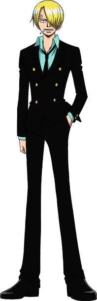

Quem é Sanji?
"Perna Preta" Sanji, nascido como Vinsmoke Sanji, e também é o cozinheiro dos Piratas do Chapéu de Palha, assim como um antigo chefe de cozinha do Baratie. Ele também é o terceiro filho e a quarta criança da Família Vinsmoke, tornando-o um príncipe do Reino Germa, até que ele oficialmente os renunciou duas vezes. Apesar de Sanji renunciar ao seu sobrenome Vinsmoke, o Governo Mundial o rotula como parte de seu nome em seu pôster de procurado.
Ele é oficialmente o quinto membro da tripulação e o quarto a se juntar, fazendo isso no final do Arco Baratie. Uma vez que ele nasceu no North Blue, ele é o primeiro Chapéu de Palha a não se originar do East Blue.
Ele é um dos quatro melhores lutadores da tripulação, ao lado de Luffy, Zoro e Jinbe. Seu sonho é encontrar o paraíso dos chefes, All Blue, sendo esse o lugar onde o East Blue, o West Blue, o North Blue e o South Blue se encontram, juntamente com sua vida selvagem. Devido aos eventos na Ilha Whole Cake, sua recompensa atual é de 1.032.000.000 Berries, dando-lhe a quarta maior recompensa na tripulação, ficando atrás apenas de Luffy, Zoro e Jinbe.
Como é a aparencia dele?

Sanji costuma vestir um terno e calças pretas a todo momento, antes e depois do salto no tempo que acontece dentro da história. Alterações em sua aparência de arco em arco costumam ser a cor da camisa que ele veste por baixo. No início seu cabelo cobria o olho direito mas eventualmente o penteado mudou e agora cobre o esquerdo.
Sanji é caracterizado por suas sobrancelhas em formato de espiral. Elas encaracolavam para a direita mas após suas modificações genéticas despertarem, elas se enrolaram para a esquerda assim como em seus irmãos.
Quando criança ele vestia uma camiseta amarela com o número 3 para indicar que era o terceiro dos quadrigêmeos. Sanji ainda possuiu um traje de batalha Germa de cor preta com botas e luvas brancas e uma capa escura de interior vermelho. O traje também conta com máscara preta e óculos escuros, além de levantar o seu cabelo criando um topete.
Personalidade dele
Sanji é um homem consideravelmente reservado mas também emocionado. Ele fala muito o que pensa e comicamente tem explosões de raiva e paixão. Ele é um tremendo mulherengo e galanteador, sempre flertando com mulheres que acha atraente até quando não são humanas. Quando está na presença de uma moça ele se torna um bobo alegre que favorece os desejos dela e é rude com os homens, mas ainda sente inveja daqueles que estejam tendo mais sorte que ele romanticamente. O fascínio de Sanji por mulheres sofre uma dualidade; ao mesmo tempo que ele tem um código de cavalheirismo que o faz ver o sexo feminino como belo, digno de respeito e cuidados, ele também possui um lado pervertido e carnal que as vezes sai do controle e o leva a tomar atitudes como espiar garotas tomando banho. Acima de tudo, ele se recusa a bater em mulheres. Isso lhe foi ensinado por seu pai adotivo Zeff e Sanji prefere morrer do que agredí-las, o que se torna um problema quando uma inimiga feminina aparece.
Seu crescimento com Zeff criou muitas características notáveis de sua personalidade. Foi com ele que Sanji se tornou um grande cozinheiro e lutador, aprendendo a não brigar com suas mãos para priorizar seu trabalho culinário. Os dias em que os dois ficaram ilhados juntos levaram Sanji a nunca querer deixar que outra pessoa passe fome ainda que seja um oponente. Ele estima tanto comida que se enfurece quando é desperdiçada e tende a bater em quem não dá o devido valor. Ele é fumante e usou cigarro pela primeira vez para tentar parecer maduro e impressionar seu pai. Sanji é extremamente leal a Zeff, grato por ter sido a figura paterna que seu pai biológico Judge nunca foi.
Um traço de Sanji muito elogiado por outros personagens é sua gentileza. Ele costuma colocar a segurança de outros antes da sua e sempre parte para o resgate de quem está em perigo. Apesar de não gostar de esperar, ele age de forma calculada e muitas vezes se separa de seu grupo para analisar a situação e encontrar uma maneira surpreendente de arruinar os planos dos vilões. Sanji era uma pessoa compassiva desde criança mas sua bondade para com os demais aumentou devido aos maus-tratos familiares que ele passou. Sua infância na família Vinsmoke fez com que sua empatia se fortalecesse já que ele prezava suas emoções enquanto seus irmãos não tem nenhuma. Após superar seus traumas ele não deseja nenhum mal para sua família mas também não quer manter nenhum relacionamento com eles. Outra pessoa com quem Sanji tem uma dinâmica agressiva é Zoro, o espadachim dos Chapéus de Palha. Os dois tem visões diferentes em muitos assuntos e acabam competindo ou brigando em momentos triviais. Apesar disso, eles se respeitam e juntos são considerados as asas que elevam Luffy à posição de Rei dos Piratas.
Todas as recompensas do Sanji
- 1,032,000,000 Berries
- 330,000,000 Berries
- 177,000,000 Berries
- 77,000,000 Berries
Primeira recompensa
Por derrotar Jabra da CP9, recebeu uma recompensa de $77.000.000.
Segunda recompensa
Por ser membro do bando e ajudar em dressrosa, sua recompensa aumentou para $177.000.000 e tambem so pode ser capturado vivo pois a familia Vismoke estava atrás dele.
Terceira recompensa
Após os eventos na Ilha, sua recompensa foi para $330.000.000
Quarta recompensa
Por derrotar Queen que era um comandante do Younkou Kaido e por ajudar em Onigashima, ele recebeu a recompensa de $1.032.000.000.
Habilidades de Sanji
Sanji se recusa a utilizar as mãos em combate, já que segundo ele, elas só devem ser utilizadas para cozinhar. Como resultado, ele fortaleceu ao máximo suas pernas, ficando conhecido como Perna Negra. Ele é um dos melhores cozinheiros que já apareceu em One Piece, e é capaz de criar comidas com qualquer tipo de alimento.
Seu estilo de luta mistura Capoeira, Savate e Taekwondo, e seus chutes são capazes de derrubar criaturas marinhas gigantescas facilmente. Além disso, ele aprendeu o Sky Walk, permitindo que ele ande no ar. Sua recompensa atual é de 1.032.000.000 Berries no anime.
Sua principal habilidade é o Diable Jamble, onde ele aquece a sua perna para realizar chutes flamejantes. Atualmente, Sanji evoluiu o golpe a ponto de conseguir incendiar seus chutes até mesmo embaixo d’água. Ele se tornou tão poderoso que conseguiu vencer seus irmãos geneticamente modificados e bater de frente com seu pai, Judge.
Sanji é um grande usuário do Haki de Observação. Ele treinou a habilidade ao máximo enquanto estava na ilha Momoiro para conseguir detectar a aproximação de Okamas e fugir mais facilmente. Junto disso, o pirata masterizou o Haki do Armamento, fortalecendo sua perna e sendo capaz de transformar suas chamas pra cor azul e conseguindo derrotar Queen que era um comandante de Kaido, além de também acertar o corpo de borracha de Luffy.